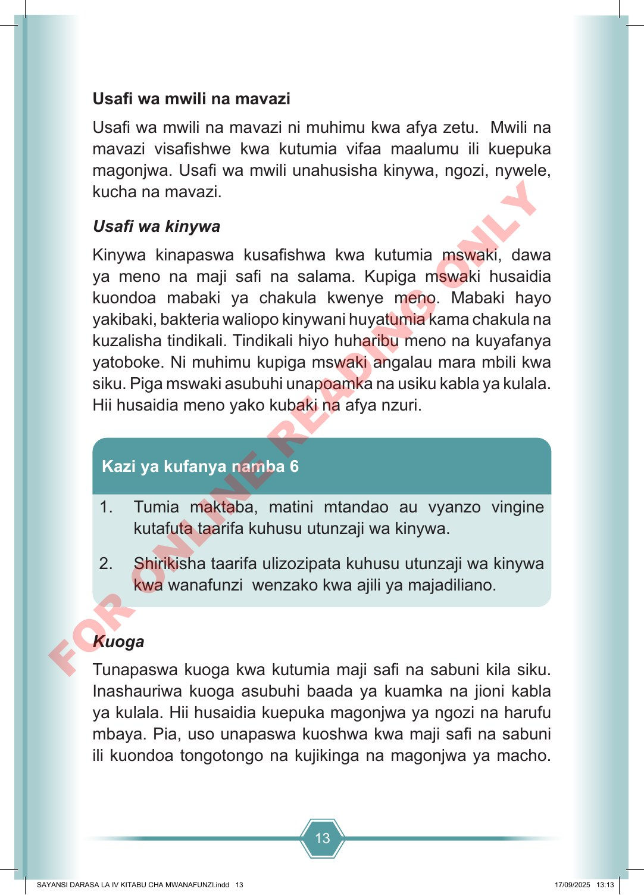

13 Usafi wa mwili na mavazi Usafi wa mwili na mavazi ni muhimu kwa afya zetu. Mwili na mavazi visafishwe kwa kutumia vifaa maalumu ili kuepuka magonjwa. Usafi wa mwili unahusisha kinywa, ngozi, nywele, kucha na mavazi. Usafi wa kinywa Kinywa kinapaswa kusafishwa kwa kutumia mswaki, dawa ya meno na maji safi na salama. Kupiga mswaki husaidia kuondoa mabaki ya chakula kwenye meno. Mabaki hayo yakibaki, bakteria waliopo kinywani huyatumia kama chakula na kuzalisha tindikali. Tindikali hiyo huharibu meno na kuyafanya yatoboke. Ni muhimu kupiga mswaki angalau mara mbili kwa siku. Piga mswaki asubuhi unapoamka na usiku kabla ya kulala. Hii husaidia meno yako kubaki na afya nzuri. 1. Tumia maktaba, matini mtandao au vyanzo vingine kutafuta taarifa kuhusu utunzaji wa kinywa. 2. Shirikisha taarifa ulizozipata kuhusu utunzaji wa kinywa kwa wanafunzi wenzako kwa ajili ya majadiliano. Kazi ya kufanya namba 6 Kuoga Tunapaswa kuoga kwa kutumia maji safi na sabuni kila siku. Inashauriwa kuoga asubuhi baada ya kuamka na jioni kabla ya kulala. Hii husaidia kuepuka magonjwa ya ngozi na harufu mbaya. Pia, uso unapaswa kuoshwa kwa maji safi na sabuni ili kuondoa tongotongo na kujikinga na magonjwa ya macho. SAYANSI DARASA LA IV KITABU CHA MWANAFUNZI.indd 13 SAYANSI DARASA LA IV KITABU CHA MWANAFUNZI.indd 13 17/09/2025 13:13 17/09/2025 13:13 F O R O N L I N E R E A D I N G O N L Y